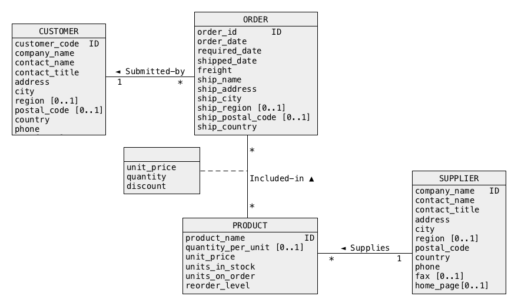
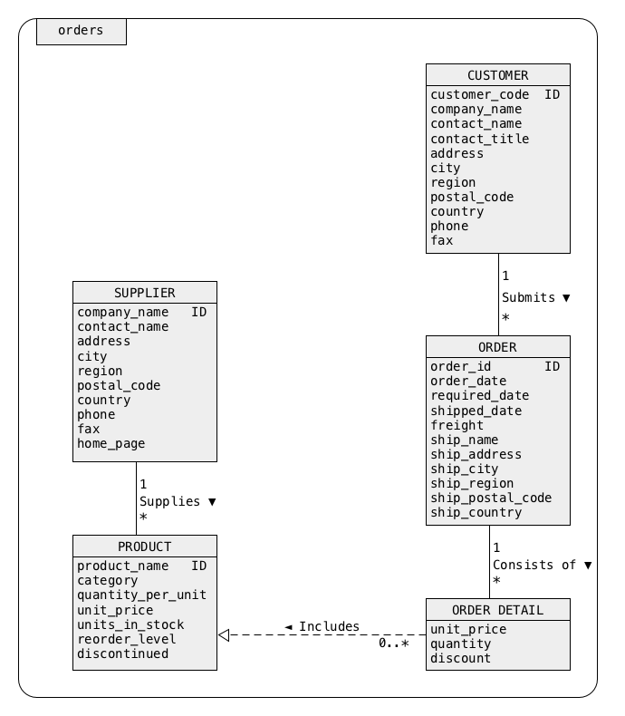

db.orders.find({"_id":"ALFKI"})
db.orders.find({})
db.orders.find({}).limit(3)
db.orders.find({}).pretty()


{
"_id" : "ALFKI",
"CUSTOMER" : {
"customer code" : "ALFKI",
"company name" : "Alfreds Futterkiste",
"contact name" : "Maria Anders",
"contact title" : "Sales Representative",
"address" : "Obere Str. 57",
"city" : "Berlin",
"region" : null,
"postal code" : "12209",
"country" : "Germany",
"phone" : "030-0074321",
"fax" : "030-0076545",
"submits" : [ ]
}
}
{"_id" : "FAMIA",
"CUSTOMER" : {
"customer code" : "FAMIA",
... ... ... ... ... ...
"submits" : [
{
"ORDER" : {
"order id" : 328,
... ... ... ... ...
"consists of" : [
{
"ORDER DETAIL" : {
"product name" : "Louisiana Fiery Hot Pepper Sauce",
... ... ... ... ...
}
},
{
"ORDER DETAIL" : {
"product name" : "Raclette Courdavault",
... ... ... ... ...
}
}
]
}
}
]
} }
{
"_id" : "Karkki Oy",
"SUPPLIER" : {
"company name" : "Karkki Oy",
"contact name" : "Anne Heikkonen",
"contact title" : "Product Manager",
"address" : "Valtakatu 12",
... ... ... ... ... ...
"supplies" : [
{
"PRODUCT" : {
"product name" : "Maxilaku",
"category name" : "Confections",
... ... ... ... ...
}
},
{
"PRODUCT" : {
"product name" : "Valkoinen suklaa",
"category name" : "Confections",
... ... ... ... ...
}
}
]
}
}
db.orders.count()
db.orders.find({"CUSTOMER":{$exists:true}})
db.orders.find({"SUPPLIER":{$exists:true}})
db.orders.find({"CUSTOMER.country":"Germany"})
db.orders.find({"SUPPLIER.city":"Oviedo"})
db.orders.find({"SUPPLIER.country":"Netherlands",
"SUPPLIER.contact title":"Accounting Manager"})
{"key":"value"}
{"key":{$eq:"value"}}
{"key":{$gt:"value"}}
{$or:[{"key1":"value1"},{"key2":"value2"}]}
{$and:[{"key1":"value1"},{"key2":"value2"}]}
{$and:[{$or:[{"key1":"value1"},{"key2":"value2"}]},{"key3":"value3"}]}
{"key":{$not:{$eq:"value"}}}
{$nor:[{"key1":"value1"},{"key2":"value2"}]}
{$nor:[{"key1":"value1"}]}
db.orders.find({$and:[{"SUPPLIER.country":"Netherlands"},
{"SUPPLIER.contact title":"Accounting Manager"}]})
db.orders.find({$or:[{"SUPPLIER.country":"Netherlands"},
{"SUPPLIER.contact title":"Accounting Manager"}]})
db.orders.find({"CUSTOMER.country":{$in:["France","Germany"]}})
db.orders.find({"CUSTOMER.country":{$not:{$eq:"Germany"}}})
db.orders.find({$nor:[{"SUPPLIER.country":"Netherlands"},
{"SUPPLIER.contact title":"Accounting Manager"}]})
db.orders.find({$nor:[{"CUSTOMER.country":"Germany"}]})
db.orders.find({"SUPPLIER.supplies.PRODUCT.product name":"Laughing Lumberjack Lager"})
db.orders.find({$and:[{"SUPPLIER.city":"London"},
{"SUPPLIER.supplies.PRODUCT.product name":"Chai"}]})
db.orders.find({$and:[{"SUPPLIER.city":"London"},
{$or:[{"SUPPLIER.supplies.PRODUCT.product name":"Chai"},
{"SUPPLIER.supplies.PRODUCT.product name":"Chang"}]}]})
db.orders.find({$and:[{"SUPPLIER.city":"London"},
{"SUPPLIER.supplies.PRODUCT.product name":{$in:["Chai","Chang"]}}]})
db.orders.find({$and:[{"SUPPLIER.city":"London"},
{"SUPPLIER.supplies.PRODUCT.product name":"Chai"},
{"SUPPLIER.supplies.PRODUCT.product name":"Chang"}]})
db.orders.find({$and:[{"SUPPLIER.supplies":{$exists:true}},
{"SUPPLIER.supplies":{$ne:[]}}]})
db.orders.find({$and:[{"SUPPLIER.supplies":{$exists:true}},
{"SUPPLIER.supplies":{$eq:[]}}]})
db.orders.find({"CUSTOMER.submits.ORDER.consists of.ORDER DETAIL.product name":"Flotemysost"})
{"array":{$all:[1,2,3,4,5]}}
{"array":{$elemMatch:{$eq:2}}}
{"array":{$elemMatch:{$gt:2,$lt:4}}}
{"array":{$elemMatch:{"key":{$eq:2}}}}
{"array":{$elemMatch:{"key":{$gt:2,$lt:4}}}}
{"array":{$size:5}}
{"array":{$size:0}}
{"array":[]}
db.orders.find({"CUSTOMER.submits.ORDER.consists of":
{$eq:[{"ORDER DETAIL":{"product name":"Boston Crab Meat",
"unit price":14.7,
"quantity":20,
"discount":0}}]}})
db.orders.find({"SUPPLIER.supplies.1.PRODUCT.product name":"Chang"})
db.orders.find({$and:[{"SUPPLIER.supplies.0.PRODUCT.product name":"Chai"},
{"SUPPLIER.supplies.1.PRODUCT.product name":"Chang"}]})
db.orders.find({"CUSTOMER.submits.ORDER.consists of.ORDER DETAIL.discount":{$gt:0.2}})
db.orders.find({"CUSTOMER.submits.ORDER.consists of":{$elemMatch:{"ORDER DETAIL.discount":{$gt:0.2}}}})
db.orders.find({"CUSTOMER.submits.ORDER.consists of":{$elemMatch:{"ORDER DETAIL.discount":{$eq:0.25},
"ORDER DETAIL.quantity":{$eq:16}}}})
db.orders.find({"CUSTOMER.submits.ORDER.consists of":{$size:4}})
db.orders.find({"CUSTOMER.submits.ORDER.consists of.4":{$exists:true}})
db.orders.find({"SUPPLIER":{$exists:true}},{"_id":0,"SUPPLIER.company name":1,"SUPPLIER.contact name":1})
db.orders.find({"SUPPLIER":{$exists:true}},{"_id":0,"SUPPLIER.company name":0,"SUPPLIER.contact name":0})
db.orders.find({"SUPPLIER":{$exists:true}},{"_id":0,"SUPPLIER.supplies":0}))
db.orders.find({"SUPPLIER":{$exists:true}},{"_id":0,"SUPPLIER.supplies":1}))
db.orders.find({"SUPPLIER":{$exists:true}},{"_id":0,"SUPPLIER.supplies.PRODUCT":1}))
db.orders.find({"SUPPLIER":{$exists:true}},{"_id":0,"SUPPLIER.supplies.PRODUCT.product name":1})
db.orders.find({"SUPPLIER":{$exists:true}},{"_id":0,"SUPPLIER.supplies.PRODUCT.product name":1,
"SUPPLIER.supplies.PRODUCT.category name":1})
db.orders.find({"SUPPLIER":{$exists:true}},{"_id":0,"SUPPLIER.company name":1,
"SUPPLIER.supplies.PRODUCT.product name":1})
db.orders.find({"CUSTOMER.region":null})
db.orders.find({"CUSTOMER.region":{$not:{$eq:null}}})
db.orders.find({"CUSTOMER.PO Box":{$exists:true}})
db.orders.find({"CUSTOMER.PO Box":{$exists:false}})
db.orders.find({"CUSTOMER.PO Box":{$not:{$exists:true}}})
var cursor = db.orders.find({"SUPPLIER":{$exists:true}})
while(cursor.hasNext())
{ print(tojson(cursor.next())); }
var cursor = db.orders.find({"SUPPLIER":{$exists:true}})
cursor.forEach(printjson)